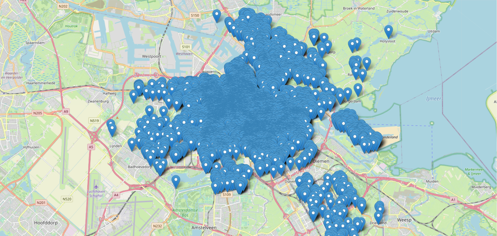
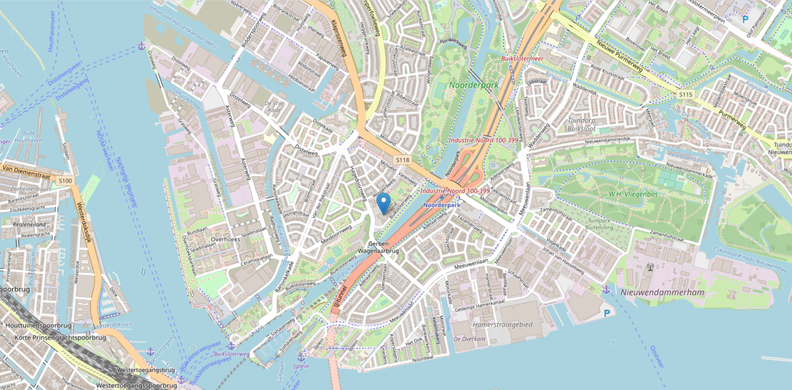

Housing
Municipal Brief
The Municipality of Amsterdam is in a love hate relationship with AirBnb, see for example this and this article. Amsterdam wants to get a bit of insight in the number of tourists that will make use of AirBnB.
Tourist tax income
AirBnB locations per neighbourhood
# Question 3.2
import pandas as pd
import matplotlib.pyplot as plt
# I loaded the data from the CSV file into the dataframe
# To make a list with the data I then chose the neighbourhood_cleansed column
# I defined the number of bins for the graph
df = pd.read_csv("C:/Users/yanni/OneDrive/Documenten/MADE_Data 1/Week 4_listings_GEBRUIK DEZE.csv.gz")
data_points = df['neighbourhood_cleansed'].tolist()
n_bins = 21
# And created a new figure and axis for the graph
fig, ax = plt.subplots()
# I made a plot of the data points with specified number of bins, then I used 'ec' to make the edges of the bars white
ax.hist(data_points, ec='white', bins=n_bins)
# To improve the readability I rotated the labels
plt.xticks(rotation=90)
rects = ax.patches
# I set the title for the graph and plotted it
plt.title('AirBnB Locations per Neighbourhood')
plt.show()
The street with the most Airbnb's

